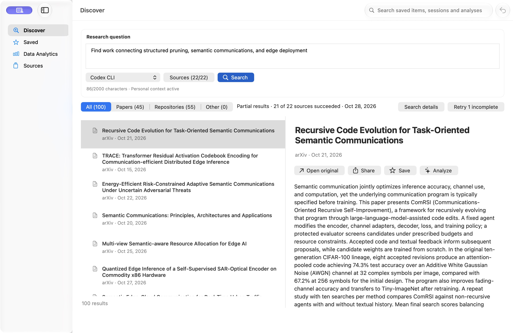
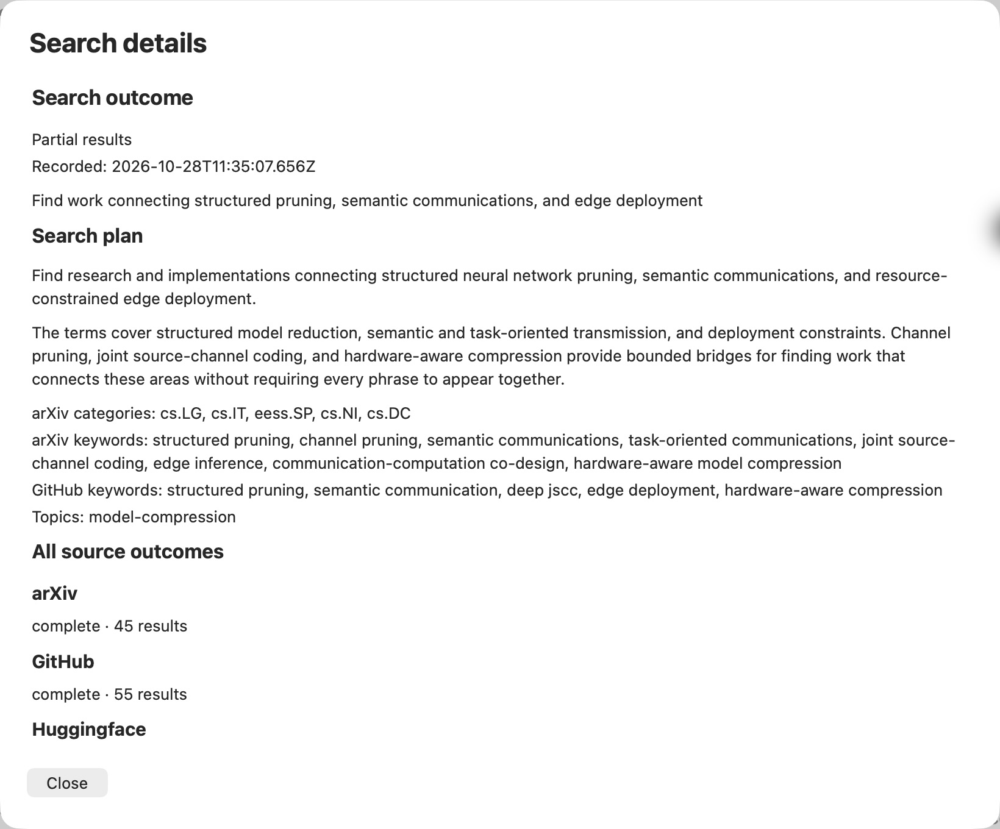
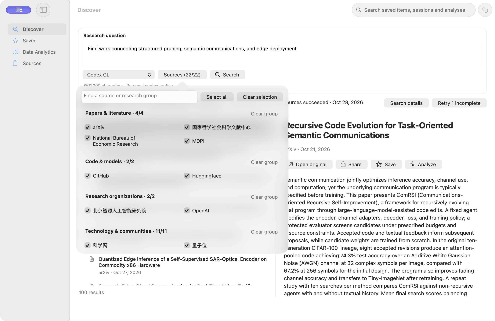
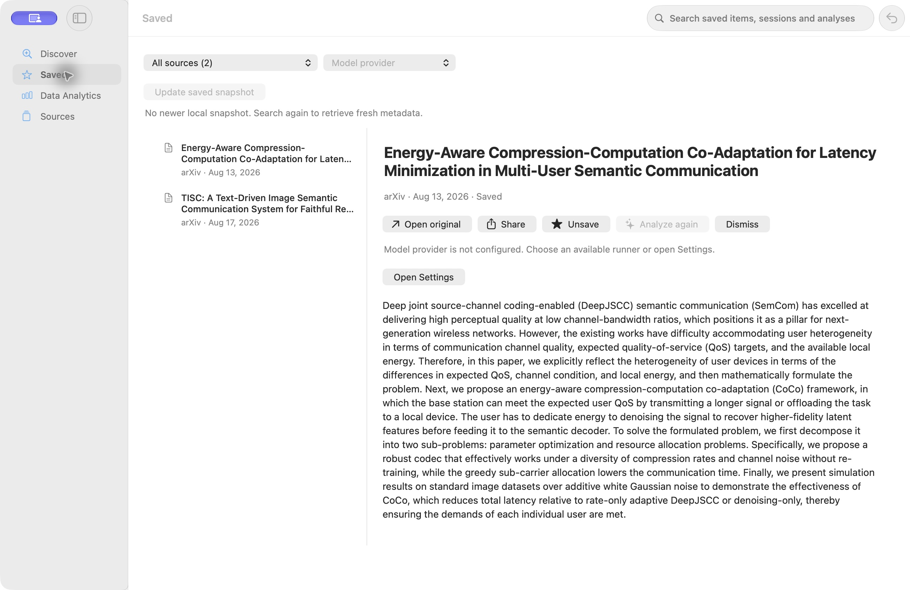
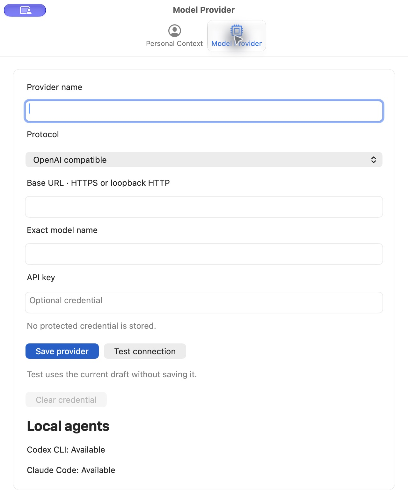
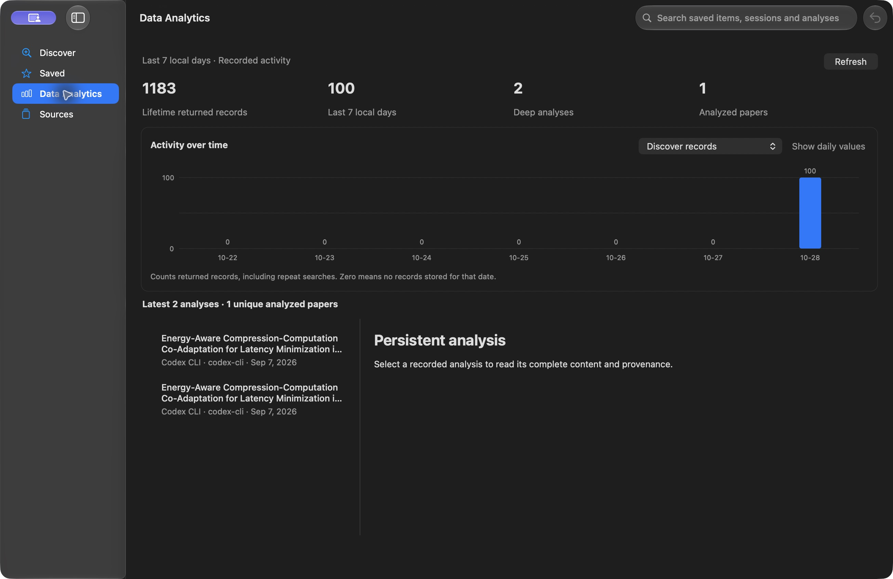
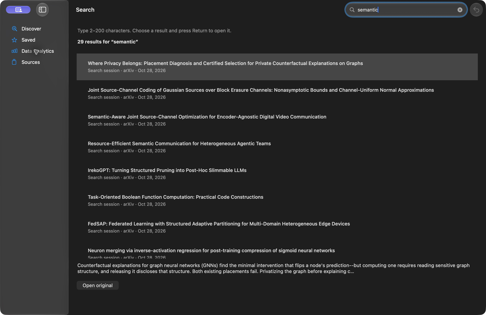
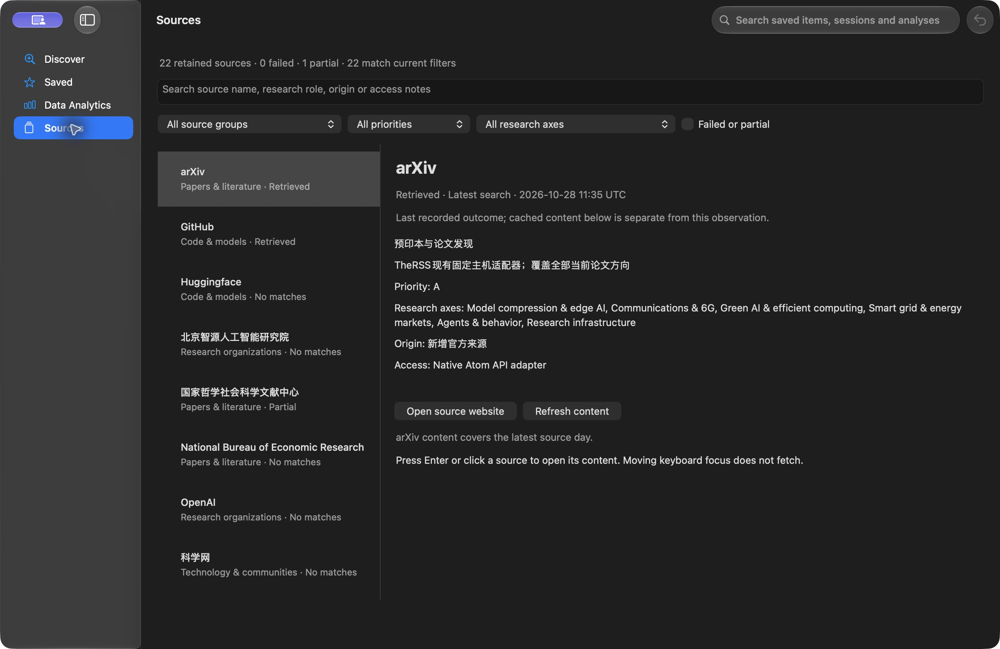

产品经理评审 · 2026 年 10 月 28 日 · 本地原生应用 0.4.0
TheRSS：核心流程已成形，用户价值仍需验证
建议继续做面向科研人员的本地发现工具。下一阶段先证明检索更有用、操作更连贯，再扩大来源或投入商业推广。
本次将“功能存在”“实际可操作”“结果质量”“市场需求”分开评估。判断依据包括当前应用、源代码、项目契约、带日期的质量基线，以及竞品官方资料。这里的市场判断是产品假设，不是收入预测。
范围与结论
目标：判断当前软件适合谁、核心价值是否成立、界面与操作有哪些障碍，以及下一阶段应优先验证什么。
允许范围：读取项目资料、操作现有本地界面的非破坏性浏览功能、运行隔离的确定性单元测试、查证官方竞品资料、保存本次截图与报告。完成条件是四个评审维度都有证据、重要界面步骤有截图、建议有优先级和验证方法。
产品定义：以 Discover
为主线，帮助个人从论文、代码和其他研究来源中发现线索，检查检索过程，保存结果，并衔接后续研究工具。适合先服务熟悉研究问题、愿意配置执行端的
Mac 用户。
| 维度 |
当前判断 |
决定下一阶段的条件 |
| 功能 |
个人测试版的主线完整；复杂问题的命中质量证据不足。 |
在独立问题上，找到更多同时满足关键约束的材料。 |
| UI |
原生桌面结构清楚，阅读与列表一致；信息层级仍有改进空间。 |
让用户更快判断相关性，减少表单和长摘要占用。 |
| 用户体验 |
专家使用路径可理解；执行端切换和配置术语增加使用成本。 |
跨页面延续用户选择，减少无效按钮和重复配置。 |
| 市场 |
存在科研工具细分机会；没有建立产品与市场匹配或付费需求证据。 |
证明相对现有工具组合的持续节时价值和自然复用。 |
功能：主线完整，检索质量是首要产品风险
值得保留的能力：一个问题进入多个来源；检索计划可检查；来源结果独立记录；部分失败不抹掉已获得的结果；Saved
显式保留材料；本地检索能重新找到历史记录；分析保留来源和生成记录。这些能力共同形成了有价值的研究工作流。
“22 个来源”的价值需要按任务验证。本次打开的既有会话共 100 条结果，其中 arXiv
45 条、GitHub 55 条；19 个来源没有匹配，1
个部分完成。这个样本不能证明其他来源无用，但说明“接入数量”不能直接当作“有效发现能力”。本次没有重新运行这次检索。
当前 产品契约明确区分：arXiv 和 GitHub
执行有边界的来源检索；其他来源主要提供近期候选，再进行本地过滤和排序。来源选择器应让用户知道哪些入口搜索历史材料，哪些入口只检查近期内容，避免将“无匹配”理解为该来源不存在相关研究。
复杂意图在排序中可能被弱化。代码将计划转成关键词、分类、主题和语言等字段，按确定性规则加分。当前计划结构没有单独表达“必须同时满足”的约束组。它可以解释单项命中，但不足以保证“结构化剪枝＋语义通信＋边缘部署”三个条件同时满足。这是代码机制与产品风险判断，不是本轮测得的准确率。
2026-09-07 的质量基线记录了 3
个问题、两条规划路径共 6 次检索。Top-10 直接相关辅助标签为 0%–60%；部分复杂问题为
0%。这些是助手辅助标签、单次运行且底层模型未匹配，不能当作人工准确率或模型排名。0.4.0
发布说明仍将该基线作为质量边界，本次未重测。
建议先改进问题保真度。区分必需约束、可选条件和排除条件；展示每条结果覆盖了哪些条件；将直接相关与相邻线索分开呈现。先用独立问题和人工标签比较，再决定是否需要其他检索技术。
保存后的用途还可以更明确。收藏与分析已经连接，但“保存这条材料后准备做什么”仍主要由用户自行判断。下一步可以验证轻量的待全文核验状态，以及标准文献导出或
Zotero 衔接需求。保留单一收藏架，避免提前扩成完整文献管理系统。现有 llm-wiki
入口有助于个人流程，但它的专用名称和 vault 依赖尚不能代表更广用户的使用习惯。
还应区分隐私承诺：状态保存在本地，不代表所有处理离线。检索、规划及分析仍会按所选来源或执行端发出请求。需要在用户作出选择时说明数据去向；当前产品契约已说明
Personal Prompt 的发送条件。
UI 与用户体验：8 个实际步骤
下列截图均来自本轮已安装应用。应用界面在检查期间出现浅色和深色外观，本轮未主动切换系统设置，也未形成完整外观验收矩阵。界面中的论文内容与数字是已有记录，不是本次独立核验的研究结论。
1. Discover：结构良好，结果扫描效率待提升 可用／建议改进
观察：侧栏、类型筛选、列表和阅读区容易识别；检索状态与重试入口可见。当前恢复会话仍展开较大的问题输入区，首屏阅读区域先呈现长摘要，匹配理由和证据说明位于摘要之后。
影响与建议：持续筛选时，用户最需要“为什么相关、是否保存、下一步是什么”。建议结果态支持紧凑的问题摘要，并把简短匹配说明与证据等级放在长摘要前。保留完整原文和展开入口。
可访问性：控件有名称，列表行包含类型和日期。截图不能证明对比度达标；未测试
VoiceOver 的实际朗读顺序。

截图 01：当前会话首屏。界面顶部的紫色系统共享指示不属于 TheRSS 产品功能。
2. Search details：透明度好，信息可更便于行动 良好
观察：可以查看意图展开、查询词、全部来源结果和规划记录。Escape
可以关闭面板。本次会话是 2 个来源有匹配、19 个无匹配、1 个部分完成；不能把它解释为 21
个来源均贡献了结果。
建议：先汇总有匹配、无匹配和未完成来源，再展示详细计划。将部分完成的原因和可采取的操作放近一些。显示来源时间时可以提供本地可读时间，保留原始时间作为详情。
可访问性：面板有标题、关闭按钮和滚动区。未验证长文档中标题导航和焦点循环。

截图 02：当前可见上半部分；来源汇总数量还依据同轮读取的完整可访问性树。
3. 来源选择：分组合理，能力边界提示不足 可用／建议改进
观察：来源选择通过按钮展开，不长期占用主界面。检索框、分组、批量选择和已选数量可见。本轮只打开与关闭面板，没有改变选择。
建议：在来源旁标示“来源检索”或“近期内容过滤”等能力。可验证按研究任务配置推荐组合的价值，而不是要求新用户逐个理解
22 个来源。保留手动选择。
可访问性：复选框在可访问性树中有文字和选中状态。未测长列表全键盘操作、窄窗和高对比度。

截图 03：来源选择保留完整分组名称和数量。
4. Saved：存在跨页面执行端断点 优先改进
观察：Discover 当前使用 Codex CLI，进入 Saved 后显示 Model
provider。该提供方未配置，Analyze again 不可用；Settings 同时显示 Codex CLI 和 Claude Code
可用。源码也确认 Saved 独立初始化为 model-provider。这是当前设计行为，不是崩溃。
影响与建议：用户可能误以为分析功能失效。建议延续用户明确选择的执行端，或明确记住 Saved
自己的选择；不可用时就近提供可用选项。不要静默切换到另一个会发送数据或产生费用的执行端。
当前“更新收藏快照”及无更新说明位于页面上方。可以降低其常驻视觉权重，将操作放到对应条目，优先呈现阅读和后续处理。
可访问性：不可用按钮旁有原因与设置入口，优于仅将按钮置灰。未实际提交分析、收藏、取消收藏或 Dismiss。

截图 04：分析不可用的原因已解释，但仍增加了跨页面操作成本。
5. Settings：原生结构清楚，配置语言偏工程化 专家可用／新手需验证
观察：Command-comma 打开独立设置窗口。Provider name、Protocol、Base
URL、Exact model name 和 API key
都需要用户理解；本地执行端可用性位于表单底部。密钥字段使用安全输入控件，测试草稿不保存的说明可见。
建议：先呈现可用的现有执行方式，再提供高级提供方配置。补充协议、地址格式和模型名称的示例。将个人背景设为可选增强步骤，让用户先体验一次有价值的检索。首次使用的完整流程本轮未以全新用户资料测试。
可访问性：输入有标签，焦点边框可见。未测错误提示的屏幕阅读器通知；未填写或测试凭据。

截图 05：高级配置在前，可用的本地执行端在后。
6. Data Analytics：数量准确说明，用户收益表达偏弱 建议调整定位
观察：页面突出累计返回量、7
天返回量和分析次数，并说明包含重复检索。分析历史可以列出，同一论文的两个版本目前具有相同标题、执行端和日期，不易区分。
建议：将分析历史与版本辨认放在更重要的位置，活动数量作为辅助。已有摘要型分析也会进入此处，因此
Deep analyses
容易被理解为已完成全文深读；建议使用“已保存分析”等中性名称。只有证据满足条件时才标记全文核验。
可访问性：图表的可访问性描述包含每日值，且有 Show daily values
按钮。本轮未验证该按钮及屏幕阅读器实际体验。

截图 06：记录量用于活动追踪，不能证明科研效率或检索质量。
7. 本地搜索：响应路径直接，命中原因不够清楚 可用／建议改进
观察：Command-F 聚焦顶部搜索框；输入 semantic 后返回 29 条记录；Escape
清除并返回工作区。结果区分检索会话、收藏和历史分析。第一条标题与可见摘要片段不显示输入词。
代码解释：本地查询同时匹配标题、摘要、匹配理由和检索会话意图；命中会话意图也可能返回该会话中的条目。因此不能仅根据标题判断检索错误。
建议：说明“命中研究问题／正文／分析”等具体字段，展示命中片段；增加范围筛选，帮助用户定位已有材料。不要把匹配同一会话当作条目高度相关的证据。
可访问性：搜索框有标签、可见焦点和返回提示。未测试中文输入法组合状态或结果打开后的完整返回路径。

截图 07：缺少命中字段与片段说明时，用户难以理解结果。
8. Sources：状态信息完整，产品语言可更聚焦 良好／低优先改进
观察：目录提供分组、优先级、研究方向、异常筛选；区分 Retrieved、No matches
和 Partial；显示记录时间，并说明缓存内容与来源观测分开。
建议：保留这些证据语义。将“Native Atom API
adapter”等实现说明收进技术详情，把用户首先需要的覆盖范围、检索方式、更新时间和访问限制放在前面。统一应用标签语言；来源原名和外部标题保持原样。
可访问性：状态有文字，不仅靠颜色表达。未操作 Refresh
content，也未将已记录状态当作实时可用性测试。

截图 08：来源状态透明，是应保留的产品优势。
市场：适合从小范围科研用户验证
建议定位：“为科研人员连接论文、代码和研究线索的本地发现工作台。”TheRSS
名称容易让新用户预期通用 RSS
阅读器，可以先通过副标题和介绍页解释核心任务，再验证是否需要改名。
首批用户可限定为使用 Mac、经常跨 arXiv 与 GitHub 查找材料、已经使用 Codex 或 Claude Code
的博士生和研究工程师。这是进入市场的假设，不是已证实的客户分布。当前产品范围不适合直接证明跨学科完整文献覆盖，也不适合承诺系统综述的穷尽检索。
| 官方替代方案 |
已查证的定位 |
对 TheRSS 的含义（判断） |
| ResearchRabbit |
免费层提供检索、文献库和集合；付费层增加更大规模种子文章、搜索控制和项目能力。 |
单纯提供论文搜索与收藏，难形成足够强的付费理由。 |
| Elicit |
官方定价页列出免费论文检索，以及付费系统综述、抽取和研究报告流程。 |
竞争重点应是发现和实际研究流程衔接，避免仅靠更多摘要或报告模板。 |
| Feedly AI |
官方将其定位为跨来源追踪、分析和优先处理主题、公司及趋势的信息工具。 |
广泛信息监测已有替代品；来源数量本身难成为壁垒。 |
上述为 2026-10-28 检索到的官方资料，未经竞品登录实测。ResearchRabbit 和 Feedly
页面内容已读取；Elicit
能力依据官方定价页的搜索返回内容。没有采用厂商宣传的效率或准确率数字作横向比较。
可能成立的差异：一个问题同时寻找论文和可用实现；用户控制执行端；本地保存历史和来源证据；将筛选后的材料送入已有研究工具。它们需要成为稳定、低操作成本的整体体验，才能减少用户自行组合工具的负担。
壁垒尚未建立。当前没有证据表明某项能力难以复制。更有可能积累价值的是：特定科研任务上的可靠命中、经核验的论文与代码关联、稳定的工具衔接，以及来源变化后的维护能力。无需为了建立所谓壁垒提前引入云端个人数据。
分发限制影响进入门槛。0.4.0 发布说明限定为 Apple
Silicon、macOS 26+
的未签名预发布版，签名、公证和生产自动更新尚未完成。其适合有限范围试用；需要更广付费分发前，应单独完成发行与支持条件。该建议不改变当前不依赖付费
Apple 凭据的开发约束。
商业方式需要先验证。当前“用户自带执行端”的形式适合控制服务端成本，但配置和维护也会增加支持成本。可先验证付费桌面发行、持续更新与支持的需求；若未来提供托管模型，再单独验证推理成本与付费价格。现阶段没有依据选择具体售价或预测收入。团队版涉及账号、权限与同步，应在个人价值得到证据后再另立范围。
建议顺序与验收方法
以下是评审建议，没有修改当前开发目标，也没有授权执行功能改动、外部写入、付费任务或发布。优先级表示“下一步先处理”，不把已知问题都定义为发布阻塞项。
| 优先级 |
工作 |
建议验收 |
| 优先 1 |
复合问题约束与相关性 |
收集独立真实问题，冻结问题、候选范围、预算和人工标签；比较 Top-10
直接相关数及首次找到有用材料的时间。不要用本轮样本调参后直接宣称泛化改进。
|
| 优先 1 |
统一执行端选择与可用性恢复 |
Discover 使用已选执行端后进入
Saved；保持明确选择或说明差异；不可用时可就近选择可用方式。未经选择不改变数据去向。
|
| 优先 1 |
结果态信息层级 |
用户可在查看长摘要前判断相关条件、来源与证据等级；保留问题编辑、完整文本、键盘路径和错误恢复。
|
| 优先 2 |
首次使用与标准工具衔接 |
用全新资料观察用户能否独立完成一次检索、保存和后续处理；以真实需求选择导出或 Zotero
接口，避免提前扩建文献管理。
|
| 优先 2 |
保存问题并手动重跑；检索范围与命中说明 |
先验证是否减少重复输入、是否自然复用；周期雷达仍是另一个待决策范围，不默认开启后台联网。
|
| 优先 3 |
分析历史定位、语言一致性与来源详情 |
区分历史版本；中性命名摘要型分析；用用户任务语言呈现来源能力。保留数量、时间和证据边界。
|
建议的产品验证：先招募 8–12 名符合目标画像的用户，观察 2–4
周。人数与周期是试验建议，不是统计代表性保证。采用交叉顺序比较 TheRSS
与用户现有工具，记录首次有用结果时间、每次任务的有用材料数、重复使用和实际进入后续研究的材料。先定义“有用”，不能仅用收藏点击代替价值。
优先看任务层面的激活与每周自然复用；每个用户每次任务都保留实际分母。若不能持续节省时间，或用户只因提醒而返回，应收窄任务或重新定位。不要用累计返回条数、模型调用量或
GitHub 星标代替产品与市场匹配。
验证结果与边界
-
已打开已安装的 TheRSS Dev.app，Info.plist 版本为 0.4.0；检查 8
个界面状态，保存并重新读取了对应 JPEG。
-
实际操作包括打开检索详情与来源面板、切换工作区、打开与关闭设置、Command-F
输入本地查询、Escape 返回、Command-1 返回 Discover。
-
确定性单元检查：6 个测试文件、53 项测试通过，退出码 0。命令见
evidence.json。它验证选定逻辑，不证明真实检索质量、完整 UI 或发行验收。
-
本机测试运行器实际显示 Vitest 4.1.11，而 package.json 声明
^5.0.5。因此本次通过仅对应现有本机依赖，没有声称与 0.4.0 发布依赖一致；未执行依赖安装。
-
代码检查时 HEAD 为
41c5aaf。工作区有其他未提交或并行工作；未假定其与已安装应用二进制完全相同。关键执行端问题同时由本轮界面和源码支持。
-
本轮没有重新调用真实 Discover、模型分析、来源刷新、llm-wiki
写入或外部分享；没有改动产品代码、设置、凭据或发布状态。
-
未测试全新用户资料、窄窗、完整暗浅色矩阵、网络中断、真实取消重试、VoiceOver、放大、高对比度或减少动态效果。没有据截图宣称完整可访问性合规。
-
9 月质量基线是历史证据；本次 100
条会话是已有本地记录。没有将二者合并成当前准确率、来源可用率或用户留存数据。
-
工具中断：多次调用收到宿主的 aborted by user 标记，另有首次截图连接错误和两次交互后的瞬时
AXError.failure。后续观察确认界面已切换；没有把中断调用记作成功。无法仅凭取消标记判断具体触发者。
报告只新增本目录中的评审资料。截图含已有研究标题与本地活动数量，未上传至设计平台。所有市场结论均保留其假设边界。